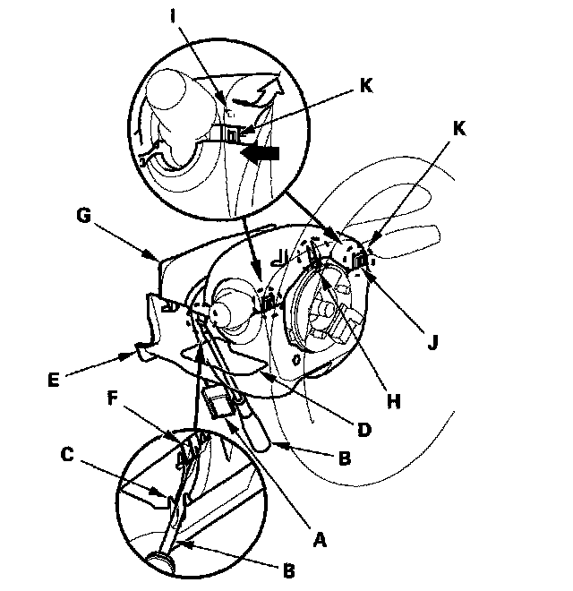
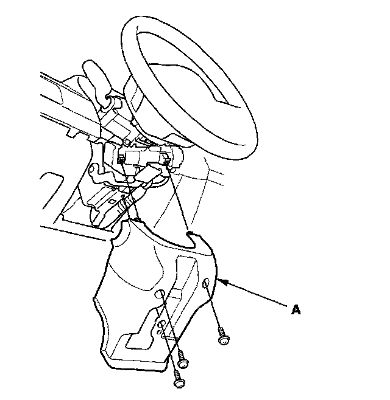

Steering Column Cover: Service and Repair
Column Cover Removal and InstallationNOTE:
^ Take care not to scratch or damage the column covers.
^ Do not pry the cover surface with any tools.
1. Release the lock lever (A), and adjust the steering column to full tilt down position and to the full telescopic pull position.

2. Insert a suitable sized screwdriver or equivalent tool (B) along the guide rib (C) into the lever hole (D) in the lower column cover (E).
3. Release the hook (F) locating on the left side of the upper column cover (G). A right side hook (H) of the upper column cover can't be released from the inside.
4. Turn the steering wheel to left, and release the left pawl (I) of the upper column cover while pushing the lower column cover from the front side.
5. Turn the steering wheel to right, and release the right pawl (J) of the upper column cover is in the same as the step 4.
6. Remove the cover by lightly pulling it up by releasing the right side hook (H) of the upper column cover.
NOTICE: Carefully release the pawls, note the hooks (K) may break when upper column cover is pulled up too hard.
7. Remove the three screws, then remove the lower column cover (A).

8. Install the upper and lower column cover in the reverse order of removal, and push the hooks into place securely.